lecture #3
For any real number x:
Examples:
For any real number x, the following inequality holds:
$$x-1 < \lfloor x \rfloor \le x \le \lceil x \rceil < x+1$$For any integer n, the following equation holds: $$\lfloor n/2 \rfloor + \lceil n/2 \rceil = n$$
Given a non-negative integer d, a polynomial in x of degree d is a function $p(x)$ of the form:
$$p(x) = \sum_{i=0}^{d} a_{i}x^{i} = a_{0}x^{0} + a_{1}x^{1} + ... + a_{d}x^{d}$$The constants $a_{0}, a_{1}, ..., a_{d}$ are the coefficients of the polynomial, and we require that $a_{d} \ne 0$.
A linear polynomial has the form $p(x) = a_{0} + a_{1}x$.
Is $5+7x$ a linear polynomial? Yes.
Is $5+7x+29x^2$ a linear polynomial? No, it's quadratic.
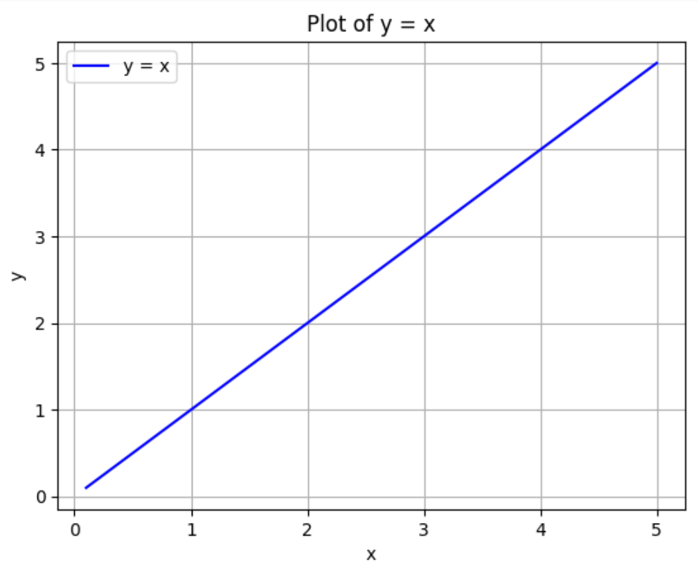
A plot of a simple linear function, $y = x$.
A quadratic polynomial has the form $p(x) = a_{0} + a_{1}x + a_{2}x^2$.
Is $7x + 9x^2$ a quadratic polynomial? Yes.
Is $x^2$ a quadratic polynomial? Yes ($a_0=0, a_1=0, a_2=1$).
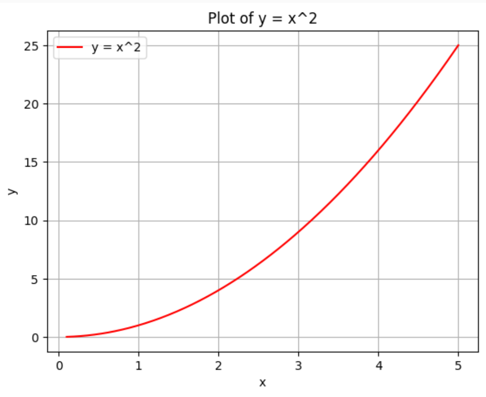
A plot of a simple quadratic function, $y = x^2$.
A cubic polynomial has the form $p(x) = a_{0} + a_{1}x + a_{2}x^2 + a_{3}x^3$.
Is $5x^3 + 3x^2 + x + 1$ a cubic polynomial? Yes.
Is $x^3$ a cubic polynomial? Yes.
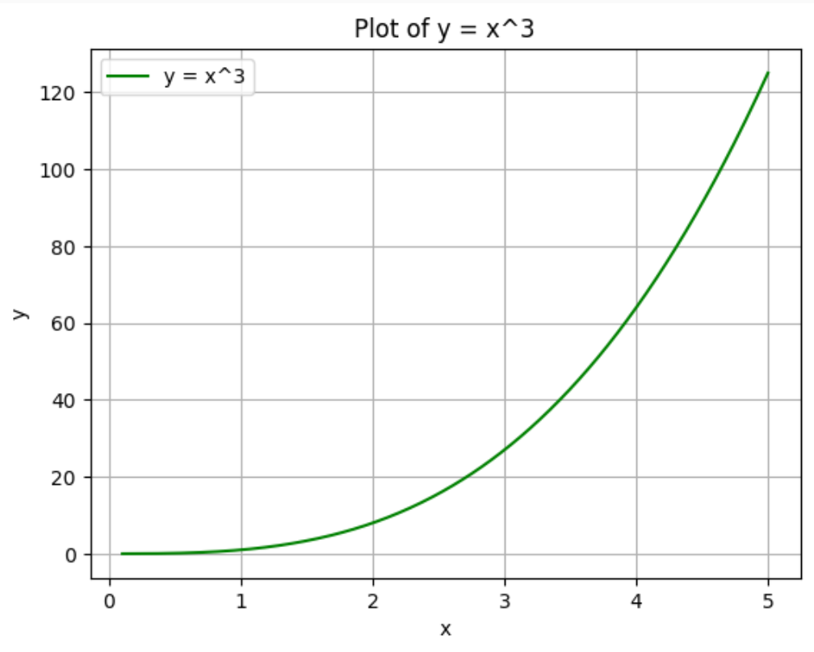
A plot of a simple cubic function, $y = x^3$.
An exponential function is a function of the form:
$$f(x) = c^x$$...where c is any constant, called the base.
Examples:
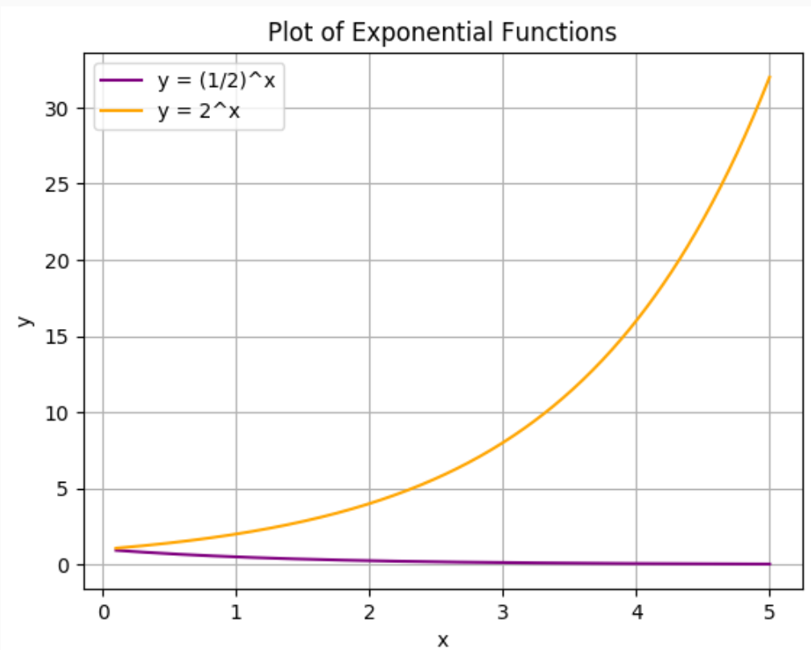
Plots of exponential functions with a base less than 1 (decay) and greater than 1 (growth).
A key concept in algorithm analysis is that any exponential function with a base strictly greater than 1 grows faster than any polynomial function.
Let's see what this looks like.
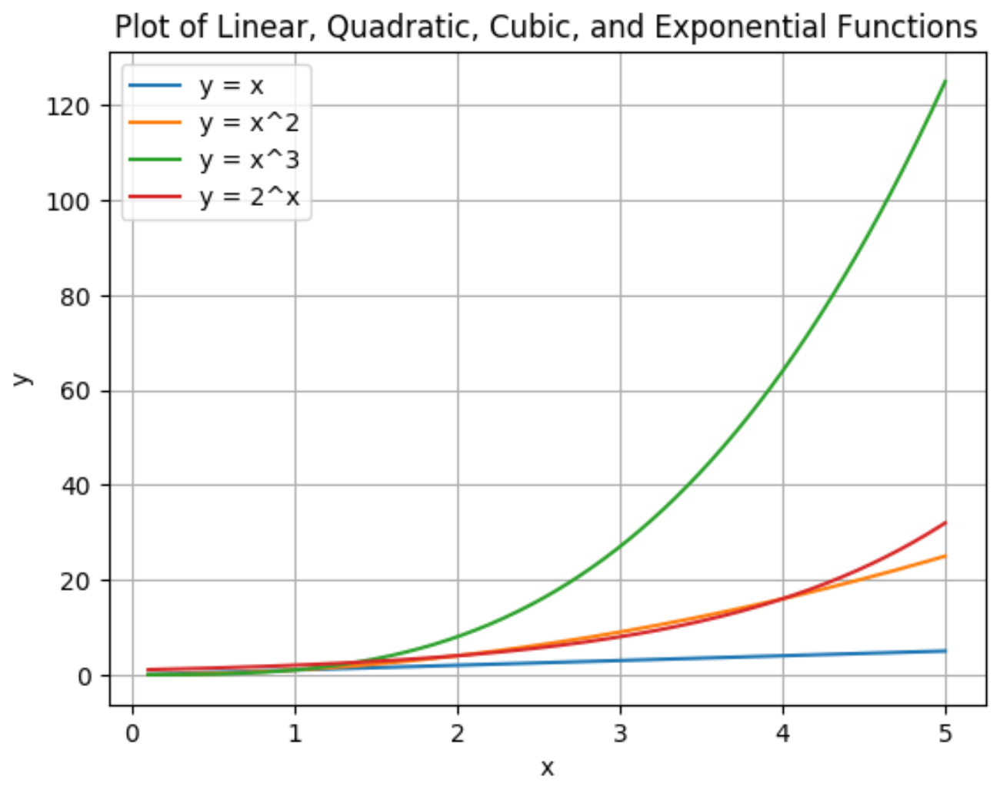
For small values of x, polynomial functions like $x^3$ can appear to grow faster than an exponential like $2^x$.
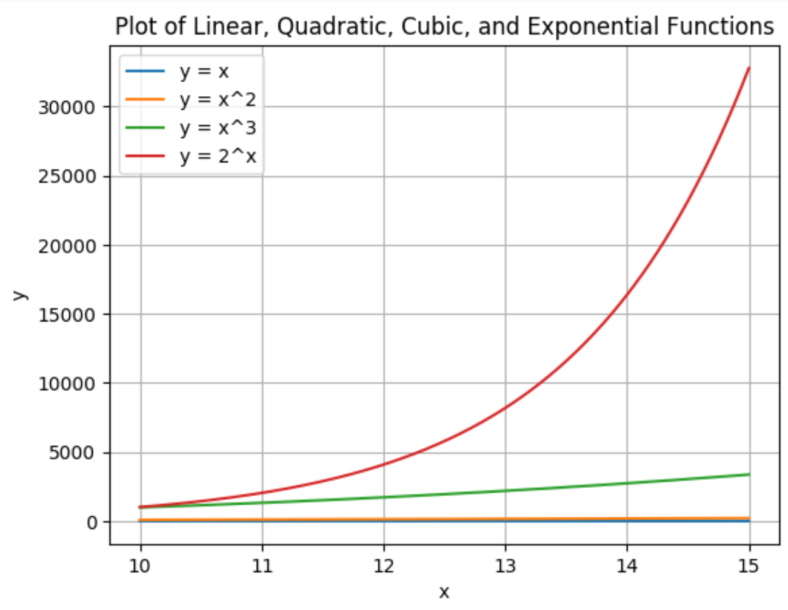
However, for larger values of x, the exponential function's growth quickly overtakes all polynomial functions.
The logarithm is the inverse function of exponentiation. It answers the question: "How many times do we need to multiply a base by itself to get a certain number?"
$$ b^a = x \iff \log_{b} x = a $$Examples:
Let's prove the following identity:
$$ a^{\log_{b}x} = x^{\log_{b}a} $$Proof:
\[ a^{\log_b(x)} \\ = b^{\log_b\!\left(a^{\log_b(x)}\right)} \\ = b^{\log_b(x)\,\log_b(a)} \\ = \left(b^{\log_b(x)}\right)^{\log_b(a)} \\ = x^{\log_b(a)} \]Example: $9^{\log_{3}n} = n^{\log_{3}9} = n^2$
Just as exponentials grow faster than polynomials, any positive polynomial function grows faster than any logarithmic function.
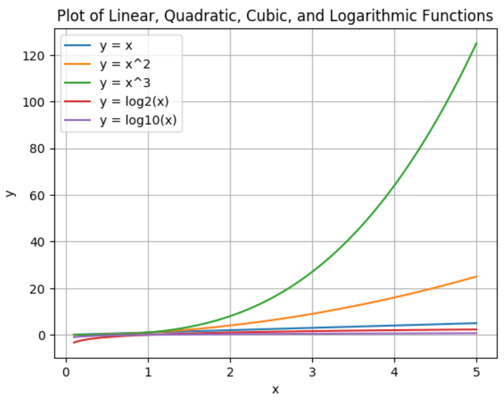
Logarithmic functions grow much more slowly than polynomials.
The growth rate of a function describes how fast its value increases as x increases.
The hierarchy of growth is generally:
Logarithmic < Polynomial < Exponential
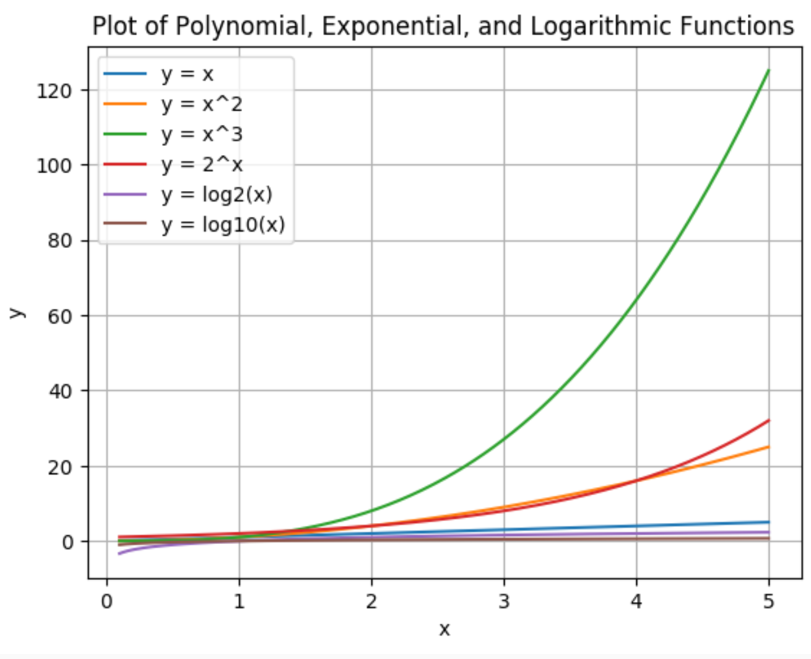
For small inputs, the differences can be subtle.
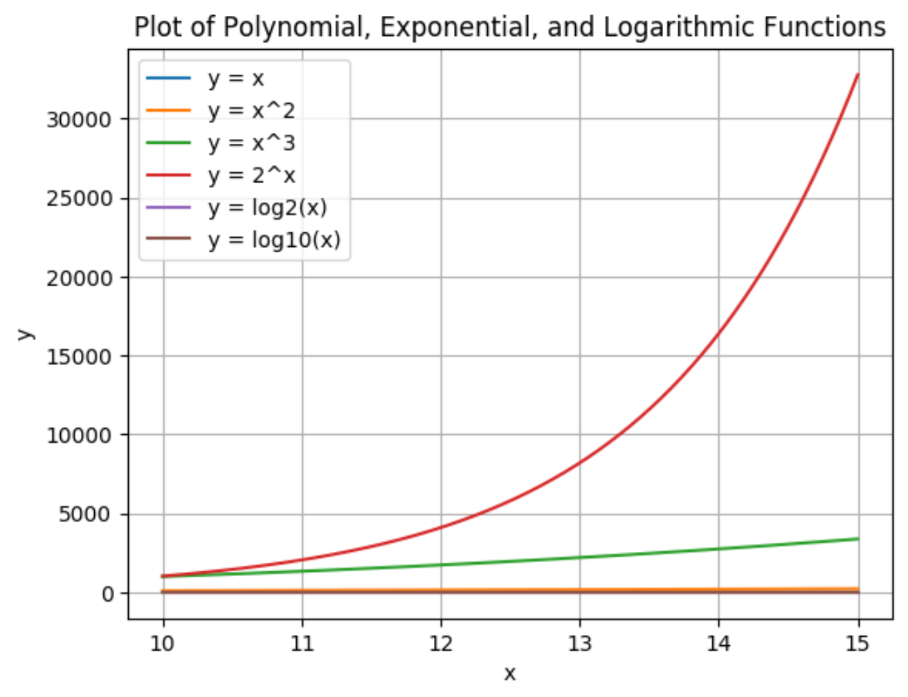
For large inputs, the different growth rates become extremely clear.
| Function $f(x)$ | Derivative $f'(x)$ |
|---|---|
| $c$ | $0$ |
| $a \cdot x$ | $a$ |
| $x^d$ | $d \cdot x^{d-1}$ |
| $a \cdot x^d$ | $a \cdot d \cdot x^{d-1}$ |
| Function $f(x)$ | Derivative $f'(x)$ |
|---|---|
| $a^x$ | $a^x \ln a$ |
| $e^x$ | $e^x$ |
| $\ln x$ | $\frac{1}{x}$ |
| $\log_a x$ | $\frac{1}{x \ln a}$ |
| Function $f(x)$ | Derivative $f'(x)$ |
|---|---|
| $g(x) + h(x)$ | $g'(x) + h'(x)$ |
| $g(x) \cdot h(x)$ | $g'(x)h(x) + g(x)h'(x)$ |
| $\frac{g(x)}{h(x)}$ | $\frac{g'(x)h(x) - g(x)h'(x)}{h^2(x)}$ |
The chain rule is used to find the derivative of a composite function.
| Function $f(x)$ | Derivative $f'(x)$ |
|---|---|
| $g(h(x))$ | $g'(h(x)) \cdot h'(x)$ |
When we perform asymptotic analysis of an algorithm's running time, $T(n)$, we follow these principles:
Because $n \log n$ grows more slowly than $n^2$, we can say that Merge Sort asymptotically beats Insertion Sort in the worst case.
For small inputs, an algorithm with a worse asymptotic complexity (like $n^2$) might be faster due to smaller constant factors.
However, as the input size n grows, the algorithm with better asymptotic complexity (like $n \log n$) will always win.
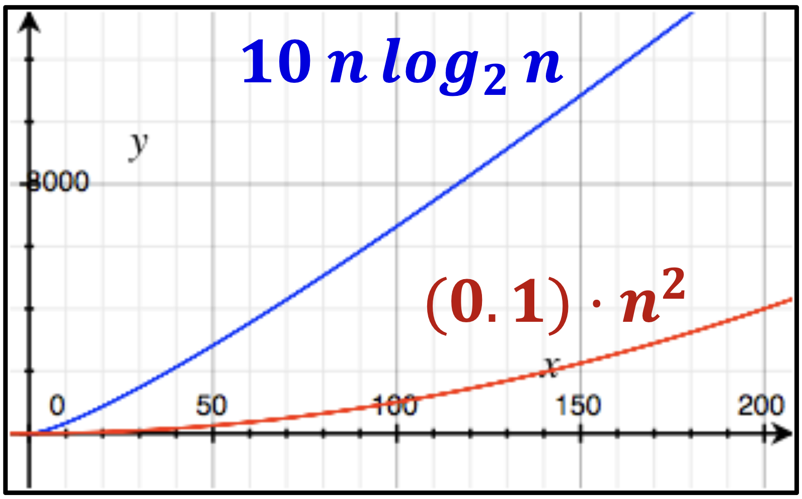
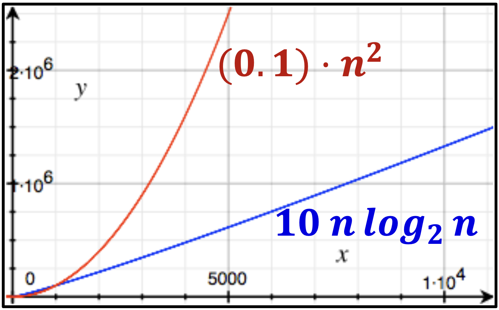
Left (Small Inputs): $0.1n^2$ is faster. Right (Big Inputs): $10n \log_2 n$ is much faster.
We need a formal way to compare how quickly different functions grow as n goes to infinity.
This is where asymptotic notation like Big-O, Big-$\Omega$, and Big-$\Theta$ comes in.
We write $f(n) = O(g(n))$ if there exist positive constants c and $n_0$ such that:
$$ 0 \le f(n) \le c \cdot g(n) $$for all $n \ge n_0$.
This means that for large enough n, $f(n)$ is "less than or equal to" some constant multiple of $g(n)$. It provides an asymptotic upper bound.
Formally, $O(g(n))$ is a set of functions:
$O(g(n)) = \{ f(n):$ there exist constants $c>0, n_0>0$ such that $0 \le f(n) \le cg(n)$ for all $n \ge n_0 \}$
So, when we write $2n^2 = O(n^3)$, we technically mean $2n^2 \in O(n^3)$.
Claim: $6n^2 \in O(n^3)$
Proof:
We must show there exist constants $c, n_0$ such that $0 \le 6n^2 \le cn^3$ for all $n \ge n_0$.
Let's choose $c=1$ and $n_0=6$.
For any $n \ge 6$, multiplying both sides by $n^2$ gives $n^3 \ge 6n^2$.
Since we chose $c=1$, the condition $6n^2 \le 1 \cdot n^3$ is satisfied for all $n \ge 6$. The definition is met.
We write $f(n) = \Omega(g(n))$ if there exist positive constants c and $n_0$ such that:
$$ 0 \le c \cdot g(n) \le f(n) $$for all $n \ge n_0$.
This means that for large enough n, $f(n)$ is "greater than or equal to" some constant multiple of $g(n)$. It provides an asymptotic lower bound.
We write $f(n) = \Theta(g(n))$ if $f(n)$ is both $O(g(n))$ and $\Omega(g(n))$.
$$ \Theta(g(n)) = O(g(n)) \cap \Omega(g(n)) $$This means $f(n)$ is "equal to" $g(n)$ asymptotically. It provides an asymptotic tight bound.
For example, $\frac{1}{2}n^2 - 2n = \Theta(n^2)$.
Think of the relationship between functions in terms of standard comparisons:
There are also notations for strict inequalities:
For example, $2n^2 = o(n^3)$, but $2n^2 \ne o(n^2)$.
If the limit exists, we can compare $f(n)$ and $g(n)$ by evaluating:
$$ \lim_{n\to\infty} \frac{f(n)}{g(n)} $$(Similar properties hold for $\Omega, \Theta, o, \omega$)
Let's prove the last claim:
$n! \in 2^{\Theta(n \log n)}$
$\iff log(n!) \in \Theta(n \log n)$
Upper Bound ($O$):
$$ \log(n!) = \sum_{i=1}^{n} \log(i) \le \sum_{i=1}^{n} \log(n) = n \log(n) $$Thus, $\log(n!) \in O(n \log n)$.
Lower Bound ($\Omega$):
$$ \log(n!) = \sum_{i=1}^{n} \log(i) \ge \sum_{i=n/2}^{n} \log(i) $$ $$ \ge \sum_{i=n/2}^{n} \log(n/2) = \frac{n}{2} \log(n/2) $$ $$ = \frac{n}{2}(\log n - \log 2) \in \Omega(n \log n) $$Since $\log(n!)$ is both $O(n \log n)$ and $\Omega(n \log n)$, it is $\Theta(n \log n)$.
Thus $n! \in 2^{\Theta(n \log n)}$
Here are some common functions sorted by increasing asymptotic growth:
$\log n$ < $\sqrt{n}$ < $n$ < $n \log n$ < $n^2$ < $n^k$ (k > 2) < $2^n$ < $n!$